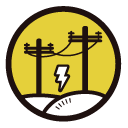
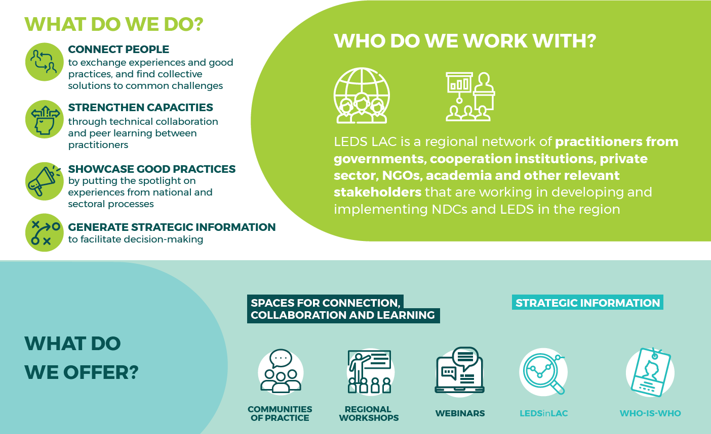

The Bioenergy Community of Practice (BioE-CoP) is a peer-to-peer learning network made up of governments, non-governmental organizations, academia, and private sector representatives that work together to advance the development of bioenergy in Latin America and the Caribbean. The Regional Platform for Latin America and the Caribbean on Low Emission Resilient Development (LEDS LAC) and the Energy Working Group of the Low Emission Development Global Partnership (LEDS GP) launched BioE-CoP in 2016.
The BioE-CoP provides an inclusive, member-driven platform in which activities and thematic focuses are based on the interests of community members. Through exchange, capacity building, and technical assistance, the BioE-CoP supports countries and organizations in the design and implementation of policies, strategies, and business models that promote the development of bioenergy to reduce greenhouse gas emissions, increase the use of resilient alternatives to fossil fuels, and contribute to the achievement of sustainable development goals.

During the first three years of operation, the BioE-CoP has facilitated the exchange of knowledge across more than 13 LAC countries and a wide array of regional and national organizations through online exchange and training sessions, in-person workshops, bilateral exchanges, and through the development of knowledge products, such as case studies and reports. The BioE-CoP also coordinates direct technical assistance from its partners to member organizations. Partners include Deutsche Gesellschaft für Internationale Zusammenarbeit, National Renewable Energy Laboratory, SD Strategies, and other technical organizations.
In December 2019, the BioE-CoP organized a side event at the Conference of the Parties (COP25) called “Expert Dialogue on Bioenergy and Climate Ambition” in collaboration with CAF Development Bank of Latin America, LEDS Global Partnership Secretariat, National Renewable Energy Laboratory, and other regional and international partners.
The session brought together experts from various sectors and policy areas to take part in a results-oriented dialogue aimed at identifying concrete lines of action regarding bioenergy use and fostering new partnerships to advance bioenergy’s contribution to climate-related actions and sustainable development.
Based on the collective interests of BioE-CoP members and the results of the expert dialogue held in the framework of COP25, the 2020 workplan aims to expand the reach of the community and deepening technical support of member countries and organizations, with a focus on improving the integration of bioenergy in national energy and climate policies, especially in nationally determined contributions (NDCs).
Activities for 2020 include monthly online exchange sessions, beginning in the month of February; online and face-to-face training events; technical support for member countries in coordination with LEDS GP´s Climate Help Desk; and the organization of a regional workshop.
The BioE-CoP is actively looking for new members and is encouraging the network to share their experiences, tools, and resources with the bioenergy community to grow the organization and help others meet their overall objective to reduce emissions.
LEDS LAC is a platform for collaboration and action, driven by Latin America and the Caribbean countries, to support the implementation of NDCs and LEDS. LEDS LAC is the regional platform of the LEDS GP.
LEDS LAC vision:

Learn more about LEDS LAC here.